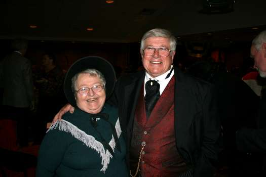

Highlights: Gala
February 12 , 2009
Addie Gramelspacher
Blueboy and Lady Blue
Davis Kuhn
Diane Silva and Gary Morris
Greg Bergschneider
Joel Tinsley

Mary Hathaway and Ron Gray
Jacksonville Mayor Ron Tendick
IC President Axel Steuer
Plans set for gala in honor of Lincoln's 200th anniversary
Jacksonville will mark the 200th anniversary of the birth of Abraham Lincoln on Thursday, Feb. 12, with a gala celebration that showcases period music and dance, features a sumptuous four course meal, and includes visits from an assortment of historical characters who considered themselves close friends and associates of the nation's 16th President.
Loreli Steuer, co-chair along with Mayor Ron Tendick of the Jacksonville Lincoln Bicentennial Commission, said the gala will be the centerpiece of extensive plans that began with last fall's “Age of Lincoln” Chautauqua and will end with a July 4th extravaganza celebrating Lincoln's many ties to our city.
“Jacksonville enjoys a rich and illustrious connection to Abraham Lincoln thanks to an impressive list of local citizens who had various roles in influencing the President,” Mrs. Steuer remarked. “Lincoln made over 40 trips to Jacksonville to take part in legal cases alone, not to mention the many visits he and Mary made to visit local family and friends over his lifetime. His Jacksonville associates were both professional and political and he was especially close to Illinois College's President Julian Sturtevant and Professor Jonathan Baldwin Turner whom he gave credit for teaching him the only English grammar he knew. IC student William Herndon became his law partner and ardent supporter for over two decades and wrote one of Lincoln's most quoted biographies.”
The Feb. 12 gala will begin with a reception from 6 to 7 p.m. in Cummings Dining Hall at Illinois College and be followed by a banquet and ball starting at 7 p.m. The $40 ticket cost includes a dinner featuring Chateaubriand and a concert program that will include familiar and popular selections by a series of musical performers.
The musical entertainment will include the Illinois College Concert Choir and Wind Ensemble, featuring soloists Addie Gramelspacher and MacMurray College student Joel Tinsley. Additional works will be presented by IC's Renaissance Singers and a newly-formed men's ensemble, The Naturally Sharp Singers. Guests will also be treated to a series of dances performed by members of the Jacksonville Pilot Club and Illinois College's literary societies.
Abraham Lincoln along with his wife, Mary Todd, and their son, Tad, will be among the large assortment of costumed historical figures portrayed by re-enactors during the evening event. The guest list is expected to include anti-slavery activists Frederick Douglass, Harriet Tubman and Harriett Beecher Stowe, who wrote Uncle Tom's Cabin. Prominent Illinois College figures who were close and influential friends of Lincoln will include President Edward Beecher ( Harriet's brother) and his wife, Isabella as well as President Julian and Hannah Sturtevant, and Professor Jonathan Baldwin Turner and his wife, Rhodolphia.
The event organizers said guests are welcome to wear period clothing for the gala, but contemporary attire will also be appropriate.